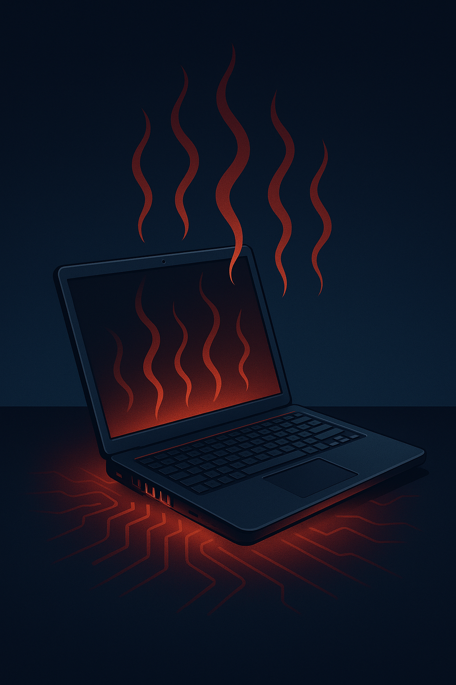

دلیل داغ کردن لپتاپ Dell چیست؟

داغ کردن لپتاپ Dell مشکل رایجی است که عمدتا به دلایل زیر رخ میدهد:
• تهویه نامناسب: دریچههای مسدود یا کارکردن در فضای گرم.
• جمع شدن گرد و غبار: کاهش بازده خنککنندگی فن.
• خرابی فن یا چسبندگی: دفع نشدن صحیح گرما.
• اجرای برنامه سنگین: درگیری بیش از حد CPU و GPU.
• آداپتور نامناسب: تولید گرمای اضافی.
راهکارها: تمیز کردن فن، سرویس دورهای، آنتیویروس، و استفاده روی سطح صاف توصیه میشود.